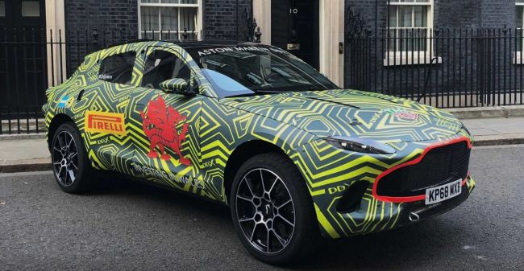

авто-новости
Шоу-кар представили председатель правления Daimler AG Ола Кяллениус и Джеймс Кэмерон
Daimler AG постоянно представляет концептуальные автомобили на разных выставках, вот и нынешняя CES 2020 не стала исключением.
Причем на этот раз фирма подготовила что-то очень особенное
. Новинка называется VISION AVTR, и она идеально подходит для вселенной кэмероновского «вто является воплощением идеи экологии и взаимодействия пассажиров с авто как с живым организмом.
Разработчики отмечают, что на необычную эстетику их вдохновили именно симбиотические отношения героев фильма «Аватар».Питаться автомобиль должен от органической аккумуляторной батареи на основе графена.
Porsche Taycan Cross Turismo (второй квартал 2020 года)
Пожалуй, самой интересной новинкой Porsche станет серийная версия электрического вседорожника Mission E Sport Turismo, который построят на одном шасси с уже представленным Taycan. От своего «донора» высокий универсал, оснащенный агрегатами с пиковой мощностью 760 л. с., будет отличаться увеличенным дорожным просветом и кузовом с пятью дверьми. Такие автомобили в Porsche еще никогда не делали.
Подробнее на Autonews:
https://www.autonews.ru/news/5e12e1139a794775f7ccfec7
Sony представила собственный автомобиль.дебют концепта Sony Vision-S состоялся на выставке Consumer Electronics Show и стал большим сюрпризом,
поскольку бренд до сих пор не проявлял интереса к созданию собственных автомобилей.
Как заявили в Sony, концепт должен продемонстрировать технические возможности компании. Но зачем это делать, если нет намерений создать собственный автомобильный бренд?
Возможно, японский производитель электроники изучает возможности выхода на авторынок, а также реакцию общественности на представленный концепт.
Руководитель проекта Vision-S Изуми Каваниши, который также возглавляет подразделение робототехники Sony, заявил в интервью японскому изданию Impress Watch,
что компания не намерена становиться автопроизводителем, а представленный концепт является «вкладом Sony в эволюцию автомобилей».
Sony Vision-S — автономное транспортное средство, оснащено 33 датчиками и особой мультимедийной системой для развлечения пассажиров.
Испытания собственной технологии автономного вождения Sony на дорогах общего пользования намечены на 2020 год.


Первый в истории внедорожник Aston Martin вопреки слухам не получил имя Varekai. Вместо этого — скромная аббревиатура DBX, где буквы DB традиционно чтят память Дэвида Брауна,
а литера X намекает на внедорожный потенциал модели.
Под капотом DBX — 4-литровый V8 с двойным наддувом, позаимствованный у специалистов Mercedes-AMG.
В пике мотор выдает 550 «лошадок» и 700 ньютон-метров. В паре с двигателем работает 9-ступенчатый автомат, а тяга на все четыре колеса распределяется активным центральным дифференциалом.
Здесь также установлен задний дифференциал с электронной блокировкой, который позволяет перераспределять тягу между колесами.
Энерговооруженность DBX позволяет машине разменивать первую «сотню» за 4,5 с и разгоняться до 291 км в час.
Производственные мощности Aston Martin ограничены,
поэтому квота на Россию на этот год составляет всего 83 автомобиля. Причем первые 30 предзаказов клиенты оставили, даже не увидев машину живьем.